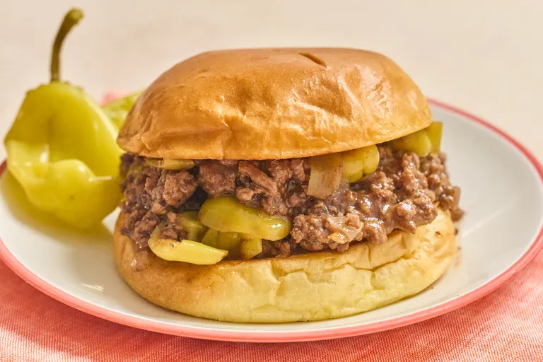

From our kitchen
Mississippi Sloppy Joes
A comforting favorite to make and share at home.

Ingredients
- 1 tablespoon olive oil
- 1/2 cup finely chopped onion
- 1 pound lean ground beef, or more to taste
- 1 (1 ounce) packet ranch seasoning mix
- 1 (1 ounce) packet dry au jus seasoning mix
- 1/2 cup chopped pepperoncini peppers
- 2 tablespoons brine, or more to taste
- 3/4 cup water
- 1/2 teaspoon ground black pepper
- 2 tablespoons ketchup
- 6 burger buns
Directions
- Heat oil in a large skillet over medium-high heat. Add onions and cook, stirring often until softened, about 2 minutes. Add ground beef and cook, crumbling with a spoon until browned and crumbled, about 5 minutes.
- Add ranch seasoning, au jus mix, pepperoncini, pepperoncini brine, water, pepper, and ketchup, and stir to combine. Bring mixture to a simmer. Reduce heat and simmer until thickened and saucy, 5 to 7 minutes.
- Divide mixture among buns and serve immediately.